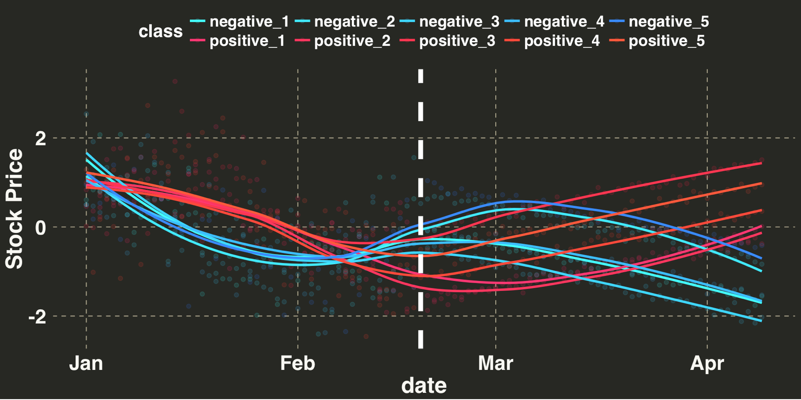
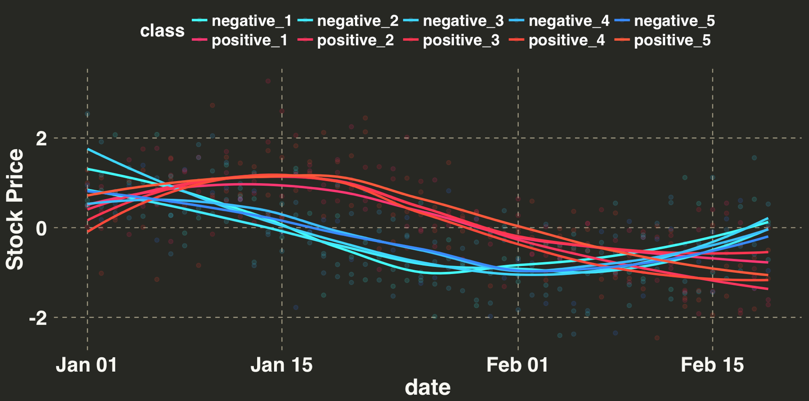
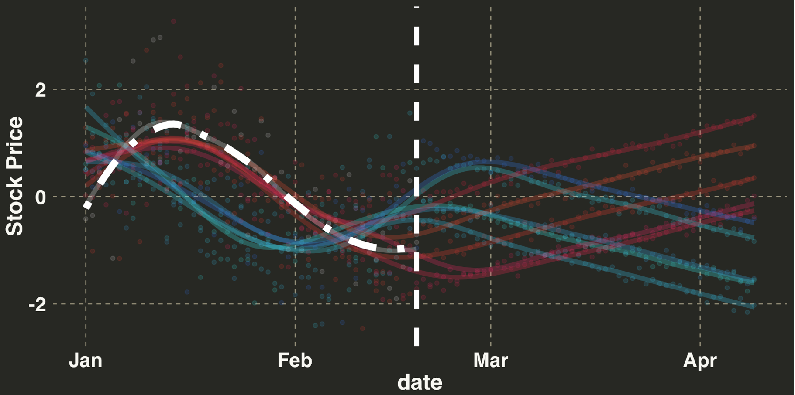
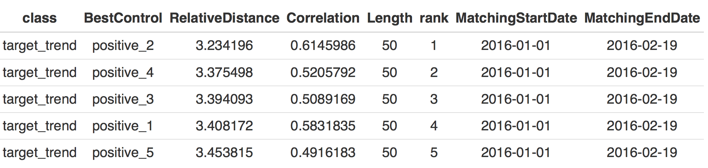
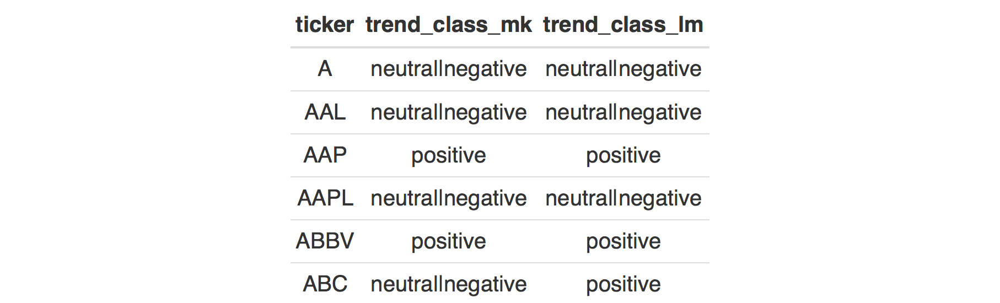
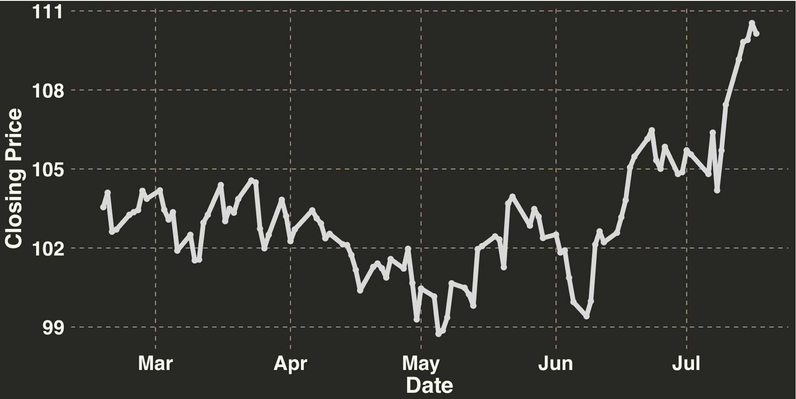
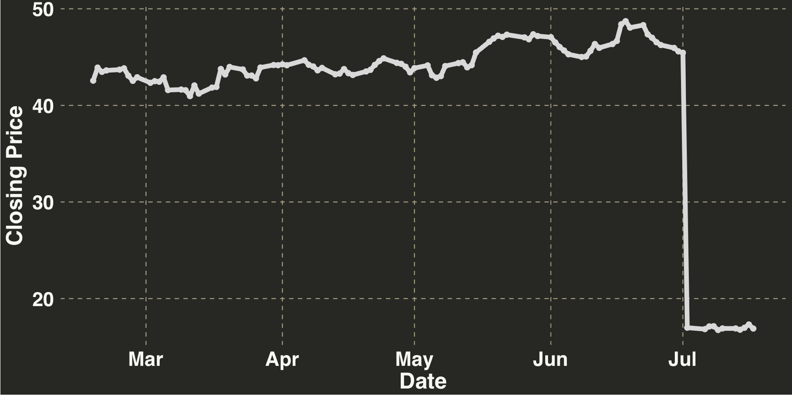
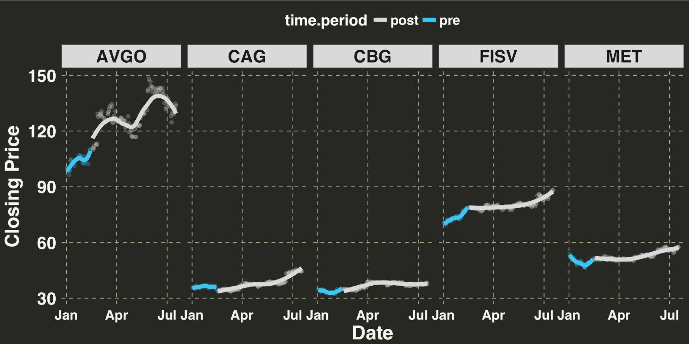
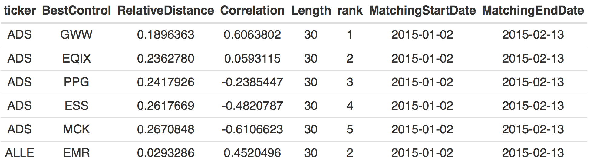
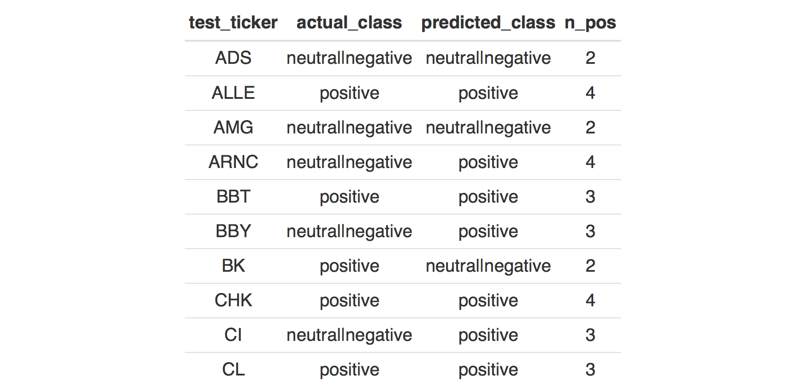

Early Trend Detection
Identifying a trend before it starts is a major area of focus in the analytics realm, because it can inform key business decisions yet remains extremely difficult. This post outlines one trend-detection method in an effort to predict where a stock’s price will go in the future.

- Overview
- Non-Parametric Approach to Trend Detection
- Predicting Stocks
- Defining a Trend
- Trend Detection Performance
Overview
Trend detection is way to to anticipate where something will likely go in the future. The logic underlying the inference is simple: Are there particular patterns of activity that precede an upward or downward trend? For example, a fashion trend might start in a big city like New York, London, or Paris. The emergence of the trend might then occur at a later date in smaller nearby cities. Thus, if you were charged with anticipating future demand for the trending product, you could use the early signal from the big cities to anticipate demand in the smaller cities. This information could inform everything from design to demand planning (i.e., getting the right amount of product in the right place). This is often referred to as a leading indicator.
For this approach to be effective, there needs to be a “common way” in which a product trends. Maybe it’s a gradual increase over the first 5 days, followed by a rapid increase over the next 10 days. Or maybe you just need the first 3 days to make an accurate prediction of a positive trend when the change in demand is very rapid. There are many ways in which something can trend, but the pattern of demand, tweets, views, purchases, likes, etc. for a positive trend has to be different from a negative, flat, or random trend.
This post outlines an approach used to parse out and seperate the signatures associated with different types of trends. We’ll use actual stock data from Fortune 500 companies as our analytical dataset to answer the following question: Can we predict whether a stock’s price will trend positively based on its closing price over the first 30 days in January and February of 2015? Before jumping into the example, though, I’ll briefly introduce the technique with a smaller dataset.
Non-Parametric Approach to Trend Detection
We’ll use a K Nearest-Neighbor (KNN) approach for classifying where a stock’s price is likely to go in the future (i.e., up or flat/down). KNN is non-parametric, which means we don’t make any assumptions about our data. There is also no ‘model’; we simply let the data make the classification or prediction. Without generalizing too much, I’ve always liked KNN when my feature set is small and consists mostly of continuous variables. It is easy to explain and surprisingly effective relative to more complicated, parametric models. All we have to do is find the right “K”, which is the number of neighbors we use to make our prediction/classification. “K” is often determined through cross-validation, where we try several values for “K” and see which gives us the best results.
So how do we determine our neighbors? There are many distance metrics used to define “similarity”, the most common being Euclidean Distance. The main drawback to this approach is that it cannot account for forward or backward shifts between series, which is an issue when dealing with sequential data. Thus we’ll use Dynamic Time Warping, which can account for temporary shifts, leads, or lags.
We’ll use 10 fictitious stocks in our initial example. Five will trend positively after their first 50 days while the remaining 5 will trend negatively over the same time period. These stocks will serve as our “training set”. We’ll then take a new stock for which we only have the first 50 days and classify it as either a “positive” or “negative” trending stock. This prediction is where we think the stock will go relative to its position at day 50.
Let’s get started and generate the initial 50 days for our 10 stocks.
libs = c('BatchGetSymbols', 'rvest', 'Kendall', 'openair', 'broom',
'artyfarty', 'MarketMatching', 'ggplot2', 'knitr')
lapply(libs, require, character.only = TRUE)
set.seed(123)
pre_date_range = seq.Date(as.Date("2016-01-01"), by = "day", length = 100)
pre_period = 50
trend_patterns = data.frame()
for(i in 1:5){
# generate pattern for stocks that trend negatively from days 51-100
neg_trend_pre = cos(seq(0, 10, 0.1))[1:pre_period] + rnorm(pre_period, 0, 0.7)
trend_patterns = rbind(trend_patterns,
data.frame(date = pre_date_range[1:pre_period],
value = neg_trend_pre,
class = paste0('negative_', i)))
# generate pattern for stocks that trend positively from days 51-100
pos_trend_pre = cos(seq(0, 10, 0.1))[(pre_period + 1):100] + rnorm(pre_period, 0, 0.7)
trend_patterns = rbind(trend_patterns,
data.frame(date = pre_date_range[1:pre_period],
value = pos_trend_pre,
class = paste0("positive_", i)))
}
Now let’s add in our positive and negative trends.
generate_trend = function(trend_length, increment, sd, base_value){
trend_vector = c()
for(j in 1:trend_length){
trend_vector = c(trend_vector, rnorm(1, base_value, sd = sd))
base_value = base_value + increment
}
return(trend_vector)
}
increment = 0.03
standard_dev = 0.08
trend_patterns_future = data.frame(NULL)
for(temp_trend in unique(trend_patterns$class)){
temp_ts = trend_patterns %>%
dplyr::filter(class == temp_trend)
# extend date 50 days forward
future_dates = pre_date_range[51:length(pre_date_range)]
base_value = temp_ts$value[length(temp_ts$value)]
future_trend = generate_trend(length(future_dates), increment, standard_dev, base_value)
if(strsplit(temp_trend, "_")[[1]][1] == 'negative'){
future_trend = future_trend * -1
}
trend_patterns_future = rbind(trend_patterns_future,
data.frame(date = future_dates,
value = future_trend,
class = temp_trend)
)
}
trend_patterns_ex = dplyr::bind_rows(trend_patterns,
trend_patterns_future) %>%
dplyr::arrange(class, date)
And finally we’ll set up our plotting functions and plot the 5 positive and 5 negative trends.
my_plot_theme = function(){
font_family = "Helvetica"
font_face = "bold"
return(theme(
axis.text.x = element_text(size = 18, face = font_face, family = font_family),
axis.text.y = element_text(size = 18, face = font_face, family = font_family),
axis.title.x = element_text(size = 20, face = font_face, family = font_family),
axis.title.y = element_text(size = 20, face = font_face, family = font_family),
strip.text.y = element_text(size = 18, face = font_face, family = font_family),
strip.text.x = element_text(size = 18, face = font_face, family = font_family),
plot.title = element_text(size = 18, face = font_face, family = font_family),
legend.position = "top",
legend.title = element_text(colour = "white", size = 16,
face = font_face,
family = font_family),
legend.text = element_text(colour = "white", size = 14,
face = font_face,
family = font_family)
))
}
pc = c("#33FFFB",
"#FF3371",
"#33EAFF", "#FF335C",
"#33D6FF", "#FF334C",
"#33BDFF", "#FF4833",
"#3388FF",
"#FF5833")
ggplot(trend_patterns_ex, aes(x = date, y = value, color = class)) +
geom_point(alpha = 0.1) + stat_smooth(se = FALSE) +
scale_color_manual(values = pc) + theme_monokai_full() +
my_plot_theme() +
geom_vline(xintercept = as.numeric(as.Date("2016-02-19")),
color = "white", size = 2, lty = 2) +
ylab("Stock Price")

Next let’s just look at the first 50 days to see if there is a pattern associated with positve/negative trends. The dotted white line indicates the point at which we make our prediction regarding where we think the stock will go.
ggplot(trend_patterns, aes(x = date, y = value, color = class)) +
geom_point(alpha = 0.1) + stat_smooth(se = FALSE) +
scale_color_manual(values = pc) + theme_monokai_full() +
my_plot_theme() + ylab("Stock Price")

In this case, stocks that initially go up, drift down, and then flatten out all trend positively. In contrast, stocks that have declined and then increased from days 30-50 trend downward from days 51-100. Thus there appears to be a common pattern that precedes an sustained increase or decrease in price. Based on this information, let’s introduce our new stock – the “target trend” – that we only have pricing information for days 1-50.
sample_trend_pre = rbind(data.frame(date = pre_date_range[1:pre_period],
value = cos(seq(0, 10, 0.1))[(pre_period + 1):100] + rnorm(pre_period, 0, 0.7),
class = "target_trend"),
data.frame(date = rep(NA, 50),
value = rep(NA, 50),
class = "target_trend"))
trend_patterns_ex = rbind(sample_trend_pre, trend_patterns_ex)
pc = c("white", pc)
ggplot(trend_patterns_ex, aes(x = date, y = value, color = class)) +
geom_point(alpha = 0.1) + geom_line(stat = "smooth",
method = "gam",
formula = y ~ s(x),
size = 2,
alpha = 0.2
) +
scale_color_manual(values = pc) + theme_monokai_full() +
my_plot_theme() +
geom_vline(xintercept = as.numeric(as.Date("2016-02-19")),
color = "white", size = 2, lty = 2) +
stat_smooth(data = sample_trend_pre, aes(x = date, y = value), color = "white",
se = FALSE, size = 3, lty = 4) +
theme(legend.position = "none") +
ylab("Stock Price")

Let’s filter our dataset to days 1-50 and see how many of the nearest neighbors for our target trend are positive/negative. In this case K is set to 5.
trend_patterns_test_time = trend_patterns_ex %>%
dplyr::filter(date <= as.Date("2016-02-19")) %>%
dplyr::mutate(class = as.character(class))
trend_pattern_matches = MarketMatching::best_matches(data = trend_patterns_test_time,
id_variable = "class",
date_variable = "date",
matching_variable = "value",
parallel = TRUE,
warping_limit = 3,
matches = 5,
start_match_period = min(trend_patterns_test_time$date),
end_match_period = max(trend_patterns_test_time$date)
)
best_matches = trend_pattern_matches$BestMatches %>%
dplyr::filter(class == 'target_trend')
print(best_matches)

Let’s focus on the BestControl field. All 5 of the most similar time-series to our target time-series have a positive label. Thus we would predict that our target time-series will trend positively from days 51-100, based on its pattern from days 1-50. If all 5 of our best matches were stocks that negatively trended, then we would make the opposite prediction. I told you this method is simple! However, let’s see if how we feel the same way after working with real-world stock data, which we’ll introduce in the next section.
Predicting stocks
We are trying to answer the following question: Is there a pattern of daily closing prices that precedes a ~90 day increase in the price of a stock? For example, maybe a small increase in the first 30 days is often followed by a big 90 day upward climb. Or maybe stocks that gradually dip for a period of 30 days are more likely to rebound over the subsequent 90 days. In essence, are there a collection of 30 day patterns that come before an upward trend in a stock’s price? Trying to formalize such patterns with a set of parameters is difficult, given all of the different patterns that could be associated with a positive trend. This is why we are using the approach outlined above.
Let’s collect the stock data. We’ll initally scrape the symbols from Wikipedia and then pull the actual closing prices via the BatchGetSymbols package. This may take a few minutes.
url = "https://en.wikipedia.org/wiki/List_of_S%26P_500_companies"
data = url %>%
read_html() %>%
html_nodes(xpath='//*[@id="mw-content-text"]/div/table[1]') %>%
html_table() %>%
data.frame()
tickers = data[,1]
train_period_begin = as.Date("2015-01-01")
train_period_end = max(seq(train_period_begin, by = "day", length.out = 200))
stock_data_train = BatchGetSymbols(tickers = tickers,
first.date = train_period_begin,
last.date = train_period_end)
qa_df = stock_data_train$df.control %>%
dplyr::filter(total.obs > 0) %>%
dplyr::select(ticker)
stock_data_train = stock_data_train$df.tickers %>%
dplyr::select(ticker, ref.date, price.close) %>%
dplyr::inner_join(qa_df)
Data looks ready to go! Next let’s select the stocks that will comprise our training/test sets. We’ll do a 90⁄10 split. Note that the test stocks will be used a little later.
n_dates = length(unique(stock_data_train$ref.date))
n_days_train = 30
train_dates = unique(stock_data_train$ref.date)[1:n_days_train]
n_days_label = n_dates - n_days_train
label_dates = unique(stock_data_train$ref.date)[(n_days_train + 1): n_dates]
set.seed(123)
pct_stocks_in_test = 0.1
# hold these out
test_stock_symbols = sample(tickers, size = floor(length(tickers) * pct_stocks_in_test), replace = FALSE)
train_stock_symbols = setdiff(tickers, test_stock_symbols)
stock_data_train_f = stock_data_train[stock_data_train$ticker %in% train_stock_symbols,]
stock_data_train_30 = stock_data_train_f[stock_data_train_f$ref.date %in% train_dates,]
stock_data_train_label = stock_data_train_f[stock_data_train_f$ref.date %in% label_dates,]
Now that we have our data and it’s all cleaned up, let’s discuss how we’ll determine the labels for our “positive” and “flat|negative” time series.
Defining a trend
We could plot out every time series and label them by hand but aint nobody got time for that. Instead, we’ll use two automated approaches:
- Linear Regression (LR)
- Mann-Kendall test (MK)
The input for both methods will be an index from 31-120. We are interested in whether the coefficient for this index is significant as well as its overall direction. LR takes the average slope, while the MK approach takes the median slope. Note that we might be violating the assumption that our data points are uncorrelated with one another. There are ways around this (e.g., block bootstrapping), but for the sake of simplicity we’ll assume an absence of serial correlation. Let’s run both tests and gather the results.
# 1. use mann-kendall to determine class
trend_df_mk = stock_data_train_label %>%
dplyr::group_by(ticker) %>%
dplyr::do(trend_data = MannKendall(ts(.$price.close))) %>%
data.frame()
trend_df_mk$tau = unlist(lapply(trend_df_mk$trend_data, function(x) x[[1]][1]))
trend_df_mk$p_value = unlist(lapply(trend_df_mk$trend_data, function(x) x[[2]][1]))
# add class according to p-value & tau coefficient
trend_df_mk_class = trend_df_mk %>%
dplyr::select(ticker, tau, p_value) %>%
dplyr::mutate(trend_class_mk = ifelse(p_value < 0.05 & tau > 0, "positive", "neutral|negative")) %>%
dplyr::select(ticker, trend_class_mk)
# 2. use linear model to determine class
trend_df_lm = stock_data_train_label %>%
dplyr::group_by(ticker) %>%
dplyr::mutate(day_index = row_number()) %>%
dplyr::do(tidy(lm(price.close ~ day_index, data = .))) %>%
data.frame()
# add class according to p-value & beta coefficient
trend_df_lm_class = trend_df_lm %>%
dplyr::filter(term == 'day_index') %>%
dplyr::mutate(trend_class_lm = ifelse(p.value < 0.05 & estimate > 0,
"positive", "neutral|negative")) %>%
dplyr::select(ticker, trend_class_lm)
final_trend_df_class = dplyr::inner_join(trend_df_mk_class, trend_df_lm_class)

The two methods produced the same classification for most of the stocks. However, let’s examine a few cases where they differ.
diff_trend_class = final_trend_df_class %>%
dplyr::filter(trend_class_mk != trend_class_lm)
cvs_stock = stock_data_train_label %>%
dplyr::filter(ticker == 'CVS')
color_values = c("#D9D9D9", "#33C5F3", "#F16C62", "#A8CE38", "#FCB51E", "#F92672")
ggplot(cvs_stock, aes(x = ref.date, y = price.close)) +
geom_point(size = 2, color = color_values[1]) +
geom_line(size = 2, color = color_values[1]) +
theme_monokai_full() +
my_plot_theme() +
ylab("Closing Price") + xlab("Date")

The price for this stock goes down but then trends upward. The LR indicates a positive trend while the MK test indicates a neutral|negative. The LR is taking the average, and the average is positive overall, given that the stock ended up higher than when it started. In contrast, the MK tests whether there is a monotonically increasing or decreasing trend over time. It is considering the ratio of positve and negative differences across time. Since we went down and then back up, there will be a similiar number of positive/negative differences, hence the neutral|negative classification.
Let’s consider a seperate example.
ni_stock = stock_data_train_label %>%
dplyr::filter(ticker == 'NI')
ggplot(ni_stock, aes(x = ref.date, y = price.close)) +
geom_point(size = 2, color = color_values[1]) +
geom_line(size = 2, color = color_values[1]) +
theme_monokai_full() +
my_plot_theme() +
ylab("Closing Price") + xlab("Date")

This time series produced the exact oppositive pattern: The MK test classified the trend as positive, while the LR produced a neutral|negative classification. This stock trended upward for most of the time-period, and then crashed the last few days in July. Those final few points have a lot of leverage on the coefficient in the linear model, while the MK test is relativley unaffected. In this case I’d say it’s a negatively trending stock, but arguments for either classification could be made.
Stocks such as these are why we are evaluating 2 seperate viewpoints. We want to make sure that the trend is somewhat definitive. If there is disagreement amongst the methods, we are going to place a stock in the “neutral|negative” class. In a more formal analytical setting, we would spend more time testing whether this approach is valid. However, for the sake of illustration, we’re going to use a simple, heuristic based approach, such that any classification disagreements amongst the 2 methods will result in a “neutral|negative” classification. Let’s update all of the instances where a disagreement occurred.
final_trend_df_class = final_trend_df_class %>%
dplyr::mutate(final_class = ifelse(trend_class_mk != trend_class_lm, 'neutral|negative',
trend_class_mk)) %>%
dplyr::select(ticker, final_class)
Finally let’s examine the distribution of our classes.
print(table(final_trend_df_class$final_class))
print("----------------------------------")
print(paste0("PERCENT OF STOCKS POSITIVE: ",
round(table(final_trend_df_class$final_class)[[2]]/nrow(final_trend_df_class) * 100, 0),
"%")
)
##
## neutral|negative positive
## 279 167
## [1] "PERCENT OF STOCKS POSITIVE: 37%"
There are about twice as many time series in the negative|neutral class relative to the positive class. This isn’t a huge imbalance, but it might skew our classifications toward the neutral|negative class. Let’s downsample our neutral|negative stocks so we have an equal number of positive and neutral|negative classes in the training set.
set.seed(123)
final_trend_df_class = final_trend_df_class %>%
dplyr::filter(final_class == 'neutral|negative') %>%
dplyr::sample_n(167) %>%
dplyr::bind_rows(
final_trend_df_class %>%
dplyr::filter(final_class == 'positive'))
print(table(final_trend_df_class$final_class))
print("----------------------------------")
print(paste0("PERCENT OF STOCKS POSITIVE: ",round(table(final_trend_df_class$final_class)[[2]]/nrow(final_trend_df_class) * 100, 0), "%"))
##
## neutral|negative positive
## 167 167
## [1] "PERCENT OF STOCKS POSITIVE: 50%"
Perfect. Now we have even numbers.
I’m going to pull out 5 stocks at random that positively trended to illustrate what our data set looks like.
stock_data_train_f = dplyr::inner_join(stock_data_train_f, final_trend_df_class) %>%
dplyr::filter(ticker %in% final_trend_df_class$ticker)
positive_ex = stock_data_train_f %>%
dplyr::filter(final_class == 'positive')
pos_5_stocks = sample(unique(positive_ex$ticker), 5)
positive_ex1 = positive_ex[positive_ex$ticker %in% pos_5_stocks,]
positive_ex1$time.period = ifelse(positive_ex1$ref.date %in% train_dates, "pre", "post")
ggplot(positive_ex1, aes(x = ref.date, y = price.close, color = time.period)) +
geom_point(alpha = 0.2) + stat_smooth(se = FALSE, size = 2) +
facet_grid(. ~ ticker) +
theme_monokai_full() +
my_plot_theme() +
theme(axis.text.x = element_text(size = 14)) +
xlab("Date") + ylab("Closing Price") +
scale_color_manual(values = c(color_values[1:2]))

Trend Detection Performance
Now that we’ve assigned a label to each of the stocks in our training set, we’ll download the test stocks. These data points will come from the following year during the same time period (i.e., Jan/Feb 2016).
test_period_begin = as.Date("2016-01-01")
test_period_end = max(seq(test_period_begin, by = "day", length.out = 200))
stock_data_test = BatchGetSymbols(tickers = test_stock_symbols,
first.date = test_period_begin,
last.date = test_period_end)
stock_data_test_qa = stock_data_test$df.control %>%
dplyr::filter(total.obs == 135) %>%
dplyr::select(ticker)
test_30_days = unique(stock_data_test$df.tickers$ref.date)[1:30]
test_df = dplyr::inner_join(stock_data_test$df.tickers, stock_data_test_qa) %>%
dplyr::select(ticker, ref.date, price.close)
test_df_30 = test_df %>%
dplyr::filter(ref.date %in% test_30_days) %>%
dplyr::mutate(ticker_class = 'testing',
final_class = 'unknown')
Next we’ll union our test and training datasets together. We’ll also change the time-stamps in our testing data set, despite the fact that our training data is from 2015 and our testing data is from 2016. We are going to initially set K to 10. The reason why we’re using such a high number is that some of the test stocks will match with other test stocks. Obviously these wont have labels, so we only want to consider matches with training stocks. This section will take a few minutes to run, so now would be a good time to heat up a hot pocket if you’re hungry.
# change the dates to match with those in the reference df
test_df_30$ref.date = rep(train_dates, length(unique(test_df_30$ticker)))
# first 30 days with class
train_test_df_30 = stock_data_train_f %>%
dplyr::filter(ref.date %in% train_dates) %>%
dplyr::mutate(ticker_class = 'training') %>%
dplyr::bind_rows(test_df_30)
max_matches = 10
ticker_matches = MarketMatching::best_matches(data = train_test_df_30,
id_variable = "ticker",
date_variable = "ref.date",
matching_variable = "price.close",
parallel = TRUE,
warping_limit = 3,
matches = max_matches,
start_match_period = min(train_test_df_30$ref.date),
end_match_period = max(train_test_df_30$ref.date)
)
top_10_matches = ticker_matches$BestMatches
# remove any stocks whose matches are in the test group
n_matches = 5
test_stock_matches = top_10_matches %>%
dplyr::filter(ticker %in% test_stock_symbols) %>%
dplyr::filter(!(BestControl %in% test_stock_symbols)) %>%
dplyr::group_by(ticker) %>%
dplyr::top_n(-n_matches, rank) %>%
data.frame()

This readout has the same interpretation as the initial example. The stocks in our ticker column are in the test set, while those in the BestControl column are in our training set. Given that we are interested in whether a stock is going to trend upward (i.e., is this a stock we should buy?), we’re going to focus on our classification rate for positive stocks. We’ll use 3 positive matches as our cutoff; that is, if at least 3 of the 5 matches in our training dataset trended positively, then we’ll predict an upward trajectory over the next 90 days, otherwise will assign a neutral|negative label.
n_positive = 3
prediction_df = final_trend_df_class %>%
dplyr::rename(BestControl = ticker) %>%
dplyr::inner_join(test_stock_matches %>%
dplyr::select(ticker, BestControl)) %>%
dplyr::rename(test_ticker = ticker,
best_control_class = final_class) %>%
dplyr::arrange(test_ticker) %>%
dplyr::mutate(class_numeric = ifelse(best_control_class == 'positive', 1, 0))
final_pred = prediction_df %>%
dplyr::group_by(test_ticker) %>%
dplyr::summarise(n_pos = sum(class_numeric)) %>%
data.frame() %>%
dplyr::mutate(predicted_class = ifelse(n_pos >= n_positive, 'positive',
'neutral|negative'))
We have now generated our predictions. Since we already know what happened over those 90 days, let’s consider the number of time series we correctly classified as positive.
test_class_days = unique(stock_data_test$df.tickers$ref.date)[31:length(unique(stock_data_test$df.tickers$ref.date))]
test_df_class = test_df %>%
dplyr::filter(ref.date %in% test_class_days)
trend_df_mk_test = test_df_class %>%
dplyr::group_by(ticker) %>%
dplyr::do(trend_data = MannKendall(ts(.$price.close))) %>%
data.frame()
#
#
trend_df_mk_test$tau = unlist(lapply(trend_df_mk_test$trend_data, function(x) x[[1]][1]))
trend_df_mk_test$p_value = unlist(lapply(trend_df_mk_test$trend_data, function(x) x[[2]][1]))
trend_df_mk_class = trend_df_mk_test %>%
dplyr::select(ticker, tau, p_value) %>%
dplyr::mutate(trend_class_mk = ifelse(p_value < 0.05 & tau > 0, "positive", "neutral|negative")) %>%
dplyr::select(ticker, trend_class_mk)
# linear model
trend_df_lm_test = test_df_class %>%
dplyr::group_by(ticker) %>%
dplyr::mutate(day_index = row_number()) %>%
dplyr::do(tidy(lm(price.close ~ day_index, data = .))) %>%
data.frame()
trend_df_lm_class_test = trend_df_lm_test %>%
dplyr::filter(term == 'day_index') %>%
dplyr::mutate(trend_class_lm = ifelse(p.value < 0.05 & estimate > 0,
"positive", "neutral|negative")) %>%
dplyr::select(ticker, trend_class_lm)
final_trend_df_class_test = dplyr::inner_join(trend_df_mk_class, trend_df_lm_class_test)
final_trend_df_class_test = final_trend_df_class_test %>%
dplyr::mutate(final_class = ifelse(trend_class_mk != trend_class_lm,
'neutral|negative',
trend_class_mk)) %>%
dplyr::select(ticker, final_class)
eval_df = final_trend_df_class_test %>%
dplyr::rename(test_ticker = ticker,
actual_class = final_class) %>%
dplyr::inner_join(final_pred) %>%
dplyr::select(test_ticker, actual_class, predicted_class, n_pos)
Again let’s check out the first few rows.

And drumroll please….
pct_pos_crt = eval_df %>%
dplyr::filter(actual_class == 'positive') %>%
dplyr::filter(actual_class == predicted_class) %>%
nrow()/nrow(eval_df)
print(paste0("PERCENT POSITIVE STOCKS CORRECTLY CLASSIFIED: ", round(pct_pos_crt * 100, 0), "%"))
## [1] "PERCENT POSITIVE STOCKS CORRECTLY CLASSIFIED: 44%"
An accuracy rate of 44% is an improvement over chance if we assume an equivalent distribution of positve, negative, and flat trends. There are myriad reasons why the classification accuracy wasn’t so hot. Here are a few that come to mind.
- A time-period of 30 days was too short
- The dynamics that lead to positive trends in our training set were different than those in our test set
- The assumptions used to classify different stocks weren’t valid
- K was too high/low
- This approach just doesn’t work with this data.
Indeed, that last point is crucial. There are some things in life that cannot be predicted, as the number of factors that influence the thing we are trying to predict are too great. This is one advantage of using a non-parametric approach, in that you don’t have to quantify each of the factors with a parameter – you just let the data decide. However, the assumption that past patterns and relationships will persist in the future still holds. In our case, if the patterns that precede a positive trend in the past are different than those in the future, then you can’t use historical data (like we did here) as a basis for predictions. This assumption is hotly contested in the world of economics when it comes to predicting stocks. Some believe there are cyclical patterns that precede a downward or upward trend in price, while others believe that the stock market is simply a random walk – it cannot be predicted. I don’t have the answer; if I did, I’d start a hedge fund, make lots of money, then buy my own soft-serve ice cream machine. I’m pretty sure that’s what we’d all do.
Although the method outlined here didn’t fare well in predicting stocks, similar methods have shown promise detecting trends in other areas, such as social media (see here). I hope you enjoyed reading this post. If you have any suggestions for alternate approaches to trend detection, I’d love to hear!
comments powered by Disqus